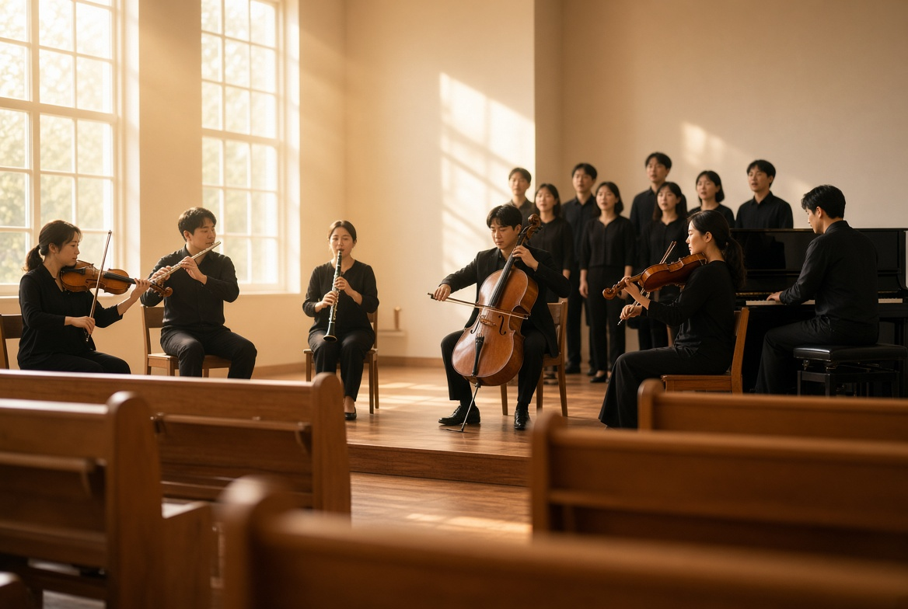

CHOIR

할렐루야! 시온 찬양대는 찬양이 하나님께 올리는 곡조있는 기도이자 아름다운 신앙 고백임을 믿는 성도들이 찬양으로 헌신하는 하늘사랑 교회의 귀한 기관입니다.
시온 찬양대의 구성
피아노 및 악기 연주자들(바이올린1, 바이올린2, 클라리넷, 플루트, 첼로), 매주 주일 오전 11:00 예배에 한마음으로 헌신하고 있습니다.
연습 시간 및 장소
주일 오전 9시40분, 1층 식당에서 연습합니다.
찬양대원의 자격
하나님을 찬양함이 우리의 본분이며,찬양으로 예배하는 성도들에게 기쁨과 위로를 주고 하나님께 이끌리는 은혜를 나누기 원하는 분이면 됩니다.